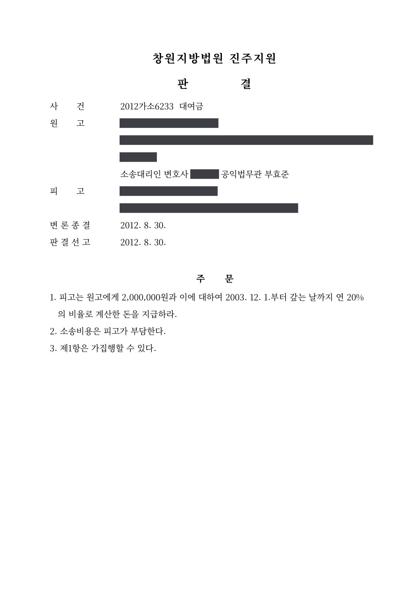

대여금 청구소송
창원지방법원 진주지원 2012가소6233 · 채권자 대리 · 담당변호사 부효준
판결문

사건의 요지
200만 원의 대여금과 2003년 12월부터 연 20%의 비율로 계산한 돈의 지급을 구한 소액사건입니다. 법원은 변론 당일 판결을 선고하여 청구 전액을 인용하였습니다.
사건의 주요 내용
원고가 피고에게 빌려 준 200만 원과 이에 대하여 2003년 12월부터 다 갚는 날까지 연 20%의 비율로 계산한 돈의 지급을 구한 대여금 청구 소액사건입니다. 이자 기산일부터 8년 넘게 지난 뒤 제기된 소송으로, 판결문에 피고의 주소가 '최후주소'로만 기재되어 있어 소재가 확인되지 않는 채무자를 상대로 한 사건으로 보입니다. 부효준 변호사는 원고(채권자)를 대리하였습니다.
소액사건심판법 제11조의2 제3항에 따라 판결서에 이유가 적혀 있지 않아, 대여 경위와 당사자의 주장은 판결문만으로는 확인되지 않습니다.
법원의 판단
법원은 2012년 8월 변론을 종결한 당일 판결을 선고하면서 원고의 청구를 전부 받아들였습니다. 피고는 원고에게 200만 원과 이에 대하여 2003년 12월부터 다 갚는 날까지 연 20%의 비율로 계산한 돈을 지급하고, 소송비용은 피고가 부담하며, 제1항은 가집행할 수 있다는 내용입니다.
이 사건이 보여 주는 것
오래전에 빌려 준 소액의 돈이라도 10년의 소멸시효가 완성되기 전이라면 원금과 함께 약정한 비율의 이자·지연손해금을 청구할 수 있습니다. 다만 시간이 지날수록 차용증이나 송금 기록을 찾기 어려워지고 채무자의 소재도 불분명해지기 쉬우므로, 변제기가 지났다면 미루지 말고 지급명령이나 소액사건 소송으로 집행권원을 확보해 두는 것이 바람직합니다.
비슷한 처분을 받으셨다면
행정처분은 처분이 있음을 안 날부터 90일 이내에 행정심판이나 취소소송으로 다투어야 하고, 기간이 지나면 돌이킬 수 없는 처분은 집행정지를 서둘러야 합니다. 처분서를 받은 날짜부터 확인해 드립니다.